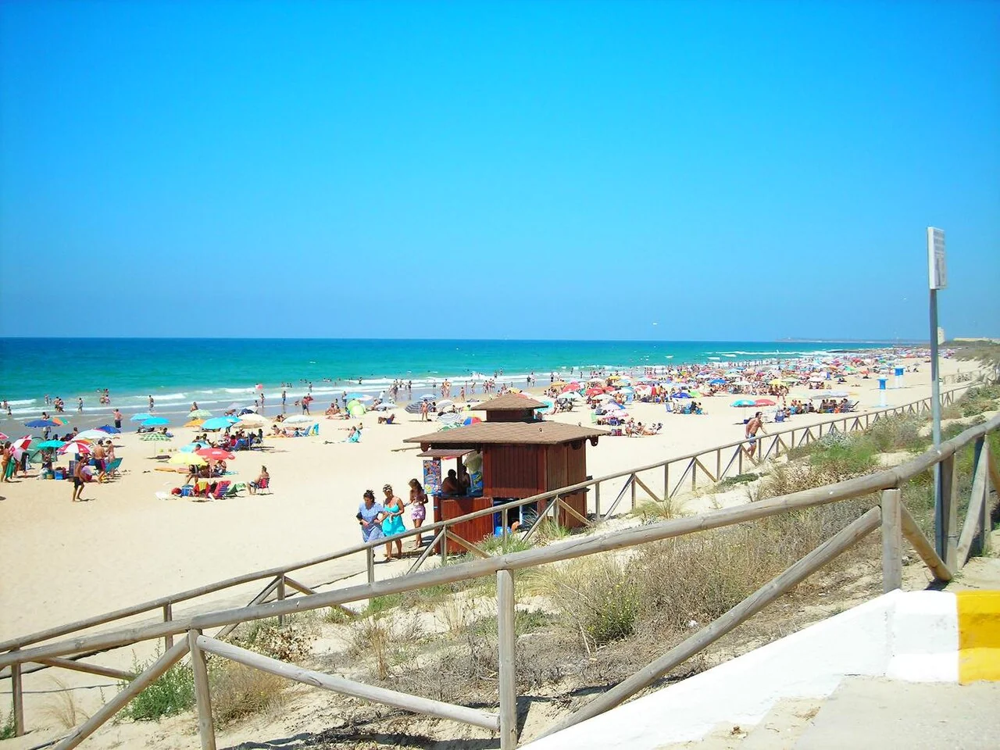

El Palmar
Cadix, Espagne · surf

Une plage de surf de la côte de Cadix. Un arrêt au bord de l’Atlantique andalou.
- Lieu
- Cadix, Espagne
- Niveau
- Variable selon les conditions
- Activités
- surf
- Type d'eau
- Mer / océan
- Coordonnées
- 36.23, -6.07 (position approximative du secteur)
Ouvrir dans Ocean Buddy Télécharger sur l'App Store
Source : Office du tourisme espagnol.